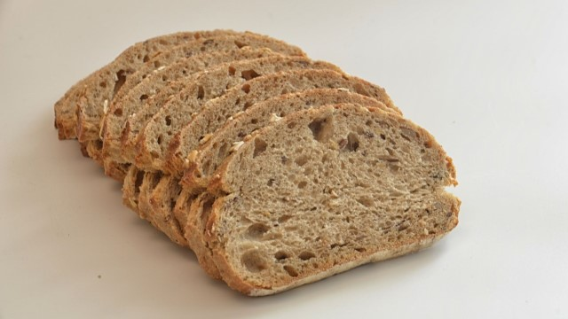

Pão Caseiro

Ingredientes
- 3 ovos
- 1 gema de ovo (para pincelar)
- 5 colheres de sopa de açúcar
- 3 colheres de sopa de manteiga
- 1 colher de chá de sal
- 1 e 1/4 xícara de leite
- 1 colher de sopa de fermento biológico
- 7 xícaras de farinha de trigo
Modo de Preparo
- Em um liquidificador, bata os ovos, açúcar, fermento, manteiga, sal e leite.
- Coloque em uma vasilha. Adicione a farinha de trigo aos poucos e mexa até a massa ficar grossa.
- Em uma superfície (bancada ou mesa), polvilhe farinha de trigo e coloque a massa. Mexa até ficar lisa.
- Enrole a massa para ficar no formato do pão e deixe descansar por 1 hora.
- Pincele o pão com uma gema de ovo.
- Coloque em uma forma untada e leve ao forno a 200°C por aproximadamente 30 minutos.
- Quando o pão já estiver douradinho, retire do forno e deixe esfriar para servir.
Voltar para a lista de receitas